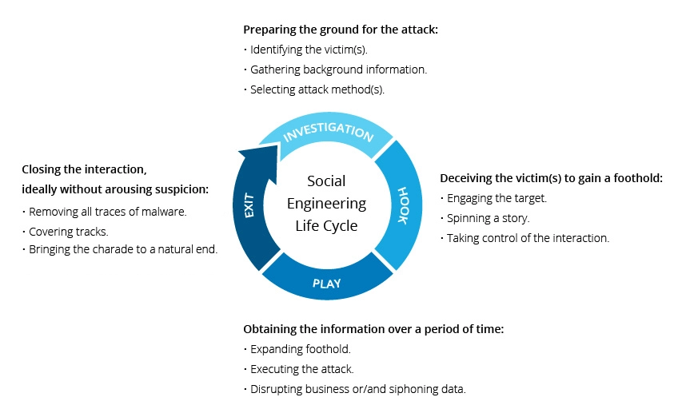

How Does Social Engineering Work?
Most social engineering attacks rely on actual communication between attackers and victims. The attacker tends to motivate the user into compromising themselves, rather than using brute force methods to breach your data.
The attack cycle gives these criminals a reliable process for deceiving you. Steps for the social engineering attack cycle are usually as follows:
- Prepare by gathering background information on you or a larger group you are a part of.
- Infiltrate by establishing a relationship or initiating an interaction, started by building trust.
- Exploit the victim once trust and a weakness are established to advance the attack.
- Disengage once the user has taken the desired action.
This process can take place in a single email or over months in a series of social media chats. It could even be a face-to-face interaction. But it ultimately concludes with an action you take, like sharing your information or exposing yourself to malware.
It's important to beware of social engineering as a means of confusion. Many employees and consumers don't realize that just a few pieces of information can give hackers access to multiple networks and accounts.
By masquerading as legitimate users to IT support personnel, they grab your private details — like name, date of birth or address. From there, it's a simple matter to reset passwords and gain almost unlimited access. They can steal money, disperse social engineering malware, and more.

social engineering life cycle
Traits of Social Engineering Attacks
Social engineering attacks center around the attacker’s use of persuasion and confidence. When exposed to these tactics, you are more likely to take actions you otherwise wouldn’t.
Among most attacks, you’ll find yourself being misled into the following behaviors:
Heightened emotions : Emotional manipulation gives attackers the upper hand in an any interaction. You are far more likely to take irrational or risky actions when in an enhanced emotional state. The following emotions are all used in equal measure to convince you.
- Fear
- Excitement
- Curiosity
- Anger
- Guilt
- Sadness
Urgency: Time-sensitive opportunities or requests are another reliable tool in an attacker’s arsenal. You may be motivated to compromise yourself under the guise of a serious problem that needs immediate attention. Alternatively, you may be exposed to a prize or reward that may disappear if you do not act quickly. Either approach overrides your critical thinking ability.
Trust: Believability is invaluable and essential to a social engineering attack. Since the attacker is ultimately lying to you, confidence plays an important role here. They’ve done enough research on you to craft a narrative that’s easy to believe and unlikely to rouse suspicion.
There are some exceptions to these traits. In some cases, attackers use more simplistic methods of social engineering to gain network or computer access. For example, a hacker might frequent the public food court of a large office building and "shoulder surf" users working on their tablets or laptops. Doing so can result in a large number of passwords and usernames, all without sending an email or writing a line of virus code.
Now that you understand the underlying concept, you’re probably wondering “what is social engineering attack and how can I spot it?”